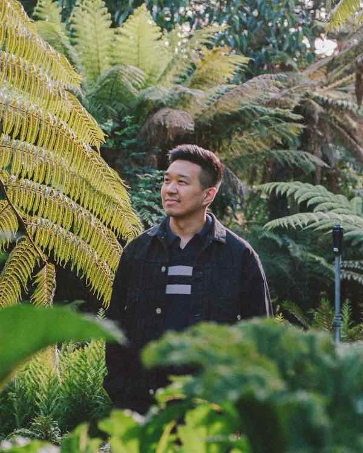

Now I coach the people still in it.
Also bread, clay, a podcast, and a lot of half-finished code.
Coach
I coach designers through the parts nobody teaches.
I work with career changers, designers from non-traditional backgrounds, and individual contributors making the jump into management.
The advice out there isn't wrong. It's incomplete — written for someone whose path looked nothing like yours. So we start with the fundamentals, then work on applying them to the situation you're actually in.
Co-Active Practitioner (CAP), trained through CTI. Working toward full ICF accreditation.
Builder
I stopped handing the work off and started shipping it.
Seventeen years of drawing the thing and passing it along. Now I write the code too — badly at first, better every month.
This site is the current exhibit. More soon.
Maker
I get obsessed with things, then I get good at them.
A Filipino and Asian pop-up bakery. A pottery studio. A weekly podcast about hot takes on life, culture, and food.
None of it is a side hustle. All of it is why the coaching works — you cannot teach someone to be a beginner again if you have not been one recently.

Taking on a small number of new coaching clients, and learning to ship the things I design.
Previously
Seventeen years of it, if you want the receipts.